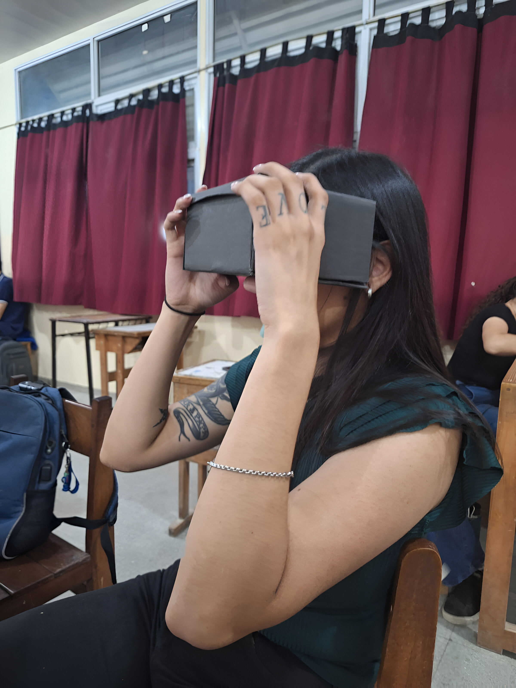

Síntesis Anual de Contenidos
Lenguaje Digital y Audiovisual – Profesorado en Educación Tecnológica
Evolución de los medios audiovisuales y digitales

A lo largo del año se trabajó una mirada histórica y conceptual sobre cómo evolucionaron los medios desde lo analógico a lo digital. Se analizaron los hitos tecnológicos que transformaron las formas de comunicación: fotografía, cine, televisión, informática, internet, plataformas digitales y redes sociales.
Se abordó cómo cada avance modificó la producción, circulación y recepción de contenidos, y cómo estas transformaciones repercuten en las prácticas culturales, educativas y profesionales actuales. Se reflexionó sobre la convergencia digital y la integración de lenguajes en entornos multimedia.
Principios básicos del lenguaje digital: teoría de la Gestalt

Se estudió en profundidad la teoría de la Gestalt como fundamento del lenguaje visual en contextos digitales. Se analizaron los principios de figura-fondo, proximidad, semejanza, continuidad, cierre, pregnancia, contraste y simetría.
Los estudiantes aplicaron estos principios a ejercicios de diseño: construcción de logotipos, flyers, portadas y composiciones digitales. El objetivo fue comprender cómo percibe el ojo humano y cómo organizar la información visual para producir mensajes claros, armónicos y eficaces.
Ética y responsabilidad en los medios digitales

Se trabajaron conceptos vinculados al comportamiento en entornos digitales: huella digital, ciudadanía digital, derechos de autor, ciberbullying, noticias falsas y ética en la producción y circulación de contenidos.
Se reflexionó sobre el rol del futuro docente como mediador crítico, capaz de promover prácticas responsables y seguras en sus estudiantes. También se analizaron casos, se realizaron debates, actividades de análisis crítico y producción de memes educativos como recurso didáctico.
Herramientas de producción digital y audiovisual

Se abordó una introducción accesible a diferentes herramientas digitales destinadas a la creación de imágenes, videos, audios y piezas multimedia.
Los estudiantes exploraron editores gráficos (Canva, Photopea), editores de video (CapCut, Filmora), bancos de recursos y aplicaciones de animación.
Se priorizó que aprendieran a seleccionar herramientas según objetivos pedagógicos, niveles educativos y disponibilidad tecnológica real en las instituciones.
Narrativa digital

Se desarrolló el concepto de narrativa digital entendida como la combinación interactiva de textos, imágenes, sonidos y videos. Se estudiaron las estructuras narrativas, los elementos del relato y la transformación de las historias en la era digital (hipertextualidad, multilinealidad, interactividad).
Se trabajó con ejemplos de relatos interactivos, videos educativos narrados, producciones transmedia y se discutió cómo integrarlos a propuestas de enseñanza. El eje se complementó con un texto teórico ampliado para profundizar en la comprensión del lenguaje narrativo audiovisual.
Diseño digital UI/UX

Se introdujeron los conceptos fundamentales de diseño de interfaces (UI) y experiencia de usuario (UX): usabilidad, accesibilidad, jerarquía visual, navegación intuitiva, arquitectura de la información y flujo de interacción.
Se analizaron interfaces reales (sitios web, apps educativas) para identificar buenas prácticas y problemas de diseño. Se discutió la importancia de diseñar experiencias significativas y claras considerando las necesidades de los usuarios.
Diseño de interfaces aplicando principios de Gestalt

En este eje se integraron los conocimientos del lenguaje visual con los criterios UI/UX. Los estudiantes debieron aplicar la Gestalt para diseñar interfaces más legibles, equilibradas y funcionales.
Se realizaron actividades de rediseño de pantallas, prototipos simples en papel y maquetas digitales. El énfasis estuvo en articular percepción, comunicación visual y usabilidad.
Realidad Virtual

Se trabajó la definición, características y potencialidades de la realidad virtual como entorno inmersivo e interactivo. Se diferenciaron los tipos de RV, sus dispositivos, sus usos en la educación y los posibles riesgos.
El eje incluyó la construcción de visores de RV caseros, permitiendo a los estudiantes comprender el funcionamiento técnico básico. Finalmente, se realizó una experiencia inmersiva con videos 360°, que abrió la reflexión pedagógica sobre cómo la VR puede enriquecer aprendizajes significativos.
Realidad Aumentada
Se estudió la realidad aumentada como tecnología que superpone elementos digitales al mundo físico en tiempo real. Se abordaron ejemplos educativos, aplicaciones accesibles y posibilidades para proyectos didácticos.
Los estudiantes investigaron casos, analizaron recursos y empezaron a planificar propuestas simples de RA para el aula. Se reflexionó sobre su valor pedagógico: motivación, visualización de contenidos complejos, exploración interactiva y aprendizaje situado.
Cierre General
El recorrido anual integró teoría, práctica y reflexión crítica. Los estudiantes no solo aprendieron conceptos del lenguaje digital y audiovisual, sino que también produjeron, analizaron, experimentaron tecnologías emergentes y las pensaron en clave pedagógica.
La formación apuntó a construir docentes capaces de: comprender los lenguajes digitales, seleccionar herramientas con criterio didáctico, diseñar materiales visuales y narrativos, aplicar principios perceptivos, promover prácticas éticas, y acompañar a sus futuros alumnos en la alfabetización digital contemporánea.